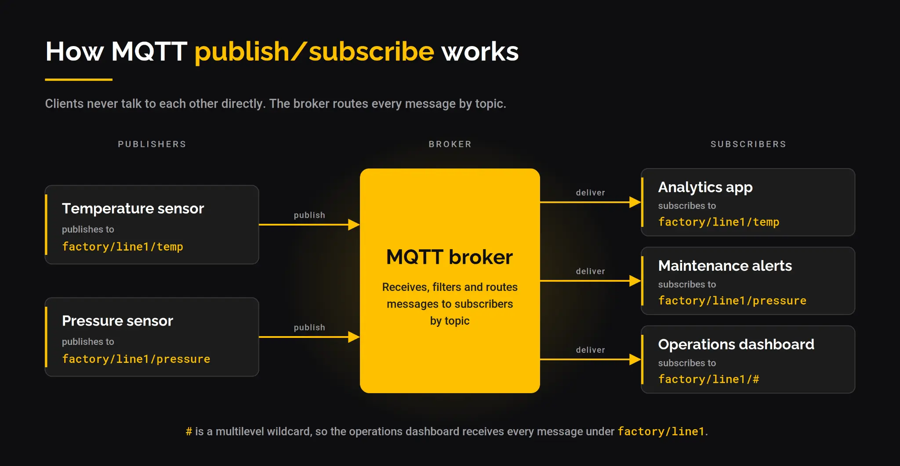

MQTT5 第一章 引言
关键词
- Network Connection：底层传输协议提供的构造，连接 Client 和 Server，提供双向有序、无损的字节流。非规范示例见 4.2。
- Application Message：MQTT 为应用传输的数据，包含 payload、QoS、一组属性、Topic Name。
- Client：使用 MQTT 的程序或设备。开连接、发布、订阅、取消订阅、关连接。
- Server：发布方与订阅方之间的中介。接受连接、接受发布、处理订阅/取消订阅、转发匹配消息、关闭连接。
- Session：Client 与 Server 之间的有状态交互。有的只持续到连接结束，有的可跨越连续的多条连接。
- Subscription：由 Topic Filter 和最大 QoS 组成，关联单个 Session。一个 Session 可有多个订阅，每个订阅的 Topic Filter 不同。
- Shared Subscription：由 Topic Filter 和最大 QoS 组成，可关联多个 Session。匹配的消息只发给其中一个 Session 对应的 Client。一个 Session 可订阅多个共享订阅，也可同时有共享和非共享订阅。
- Wildcard Subscription：Topic Filter 中含一个或多个通配符的订阅，可匹配多个 Topic Name。通配符说明见 4.7。
- Topic Name：附在 Application Message 上的标签，与 Server 已知的订阅匹配。
- Topic Filter：订阅中的表达式，表示对一个或多个主题的兴趣，可含通配符。
- MQTT Control Packet：网络连接上发送的信息包。规范定义十五种类型，例如 PUBLISH 用于传递 Application Message。
- Malformed Packet：无法按规范解析的控制包。错误处理见 4.13。
- Protocol Error：包解析成功后，发现数据不被协议允许、或与 Client/Server 状态不一致。错误处理见 4.13。
- Will Message：网络连接非正常关闭时，由 Server 发布的 Application Message。见 3.1.2.5。
- Disallowed Unicode code point：不应包含在 UTF-8 编码字符串中的 Unicode 控制码和非字符集合。见 1.5.4。
编码
这个就是mqtt报文内部数据的编码方式，我们使用的客户端服务器实现会实现好下面的编码方式。
- 1.5.3 四字节整数：32 位无符号，大端序，高位字节在前。
- 1.5.4 UTF-8 编码字符串：两字节长度前缀 + UTF-8 数据，最大 65,535 字节。强制要求：格式良好 UTF-8，不得含 U+D800–U+DFFF；不得含 U+0000；
0xEF 0xBB 0xBF 必须解释为 U+FEFF，不得跳过或剥离。
- 1.5.5 可变字节整数：每字节低 7 位存数据，最高位是延续位（1 表示还有后续字节），最多 4 字节，编码值必须用最少字节表示。
- 1.5.6 二进制数据：两字节长度前缀 + 数据，0–65,535 字节。
- 1.5.7 UTF-8 字符串对：两个 UTF-8 字符串依次排列，第一个是名称，第二个是值。两者都必须符合 1.5.4 的要求。
MQTT 3.1.1 与 5.0 关键变化对照
| 维度 |
MQTT 3.1.1 |
MQTT 5.0 新增/变化 |
对应已读/将读的位置 |
| 错误报告 |
确认报文几乎没有失败原因 |
原因码（Reason Code） 扩展到约 20 个，CONNACK、PUBACK、DISCONNECT 等都可携带 |
第三章各报文的可变报头 |
| 会话控制 |
只有 Clean Session 一个布尔值 |
拆成 Clean Start + Session Expiry Interval 两个独立控制 |
第三章 CONNECT 属性、第四章会话状态 |
| 属性系统 |
不存在 |
报文可变报头可携带属性（Properties） 键值对，是 v5.0 大量新特性的载体 |
第二章固定报头之后、第三章每个报文 |
| 用户自定义元数据 |
只能塞进 payload |
User Property：任意 UTF-8 键值对，可在多数控制报文中传输 |
第三章各报文属性区 |
| 主题传输优化 |
每次发完整 Topic 字符串 |
Topic Alias：用整数别名代替长 Topic，减少重复传输的字节数 |
第三章 PUBLISH 属性 |
| 消息生命周期 |
无过期概念 |
Message Expiry Interval：发布时指定消息有效期，过期后 Broker 不再投递 |
第三章 PUBLISH 属性 |
| 流控 |
不存在 |
Receive Maximum：协商“我最多能同时处理多少个未确认的 QoS 1/2 消息” |
第三章 CONNECT 属性 |
| 请求/响应模式 |
需应用层自行约定 |
Response Topic + Correlation Data：PUBLISH 属性中直接携带响应主题和关联标识 |
第三章 PUBLISH 属性 |
| 遗嘱精细控制 |
断线立即发遗嘱 |
Will Delay Interval：指定断线后延迟 N 秒再发遗嘱，期间重连则不发送 |
第三章 CONNECT 遗嘱属性 |
| 认证扩展 |
只有 CONNECT 中的用户名/密码 |
新增 AUTH 报文，支持挑战-响应式多轮认证 |
第三章 AUTH 报文（第十五种类型） |
| 共享订阅 |
不支持（需额外机制） |
原生支持：多个订阅者订阅同一共享 Topic，消息只发给其中一个 |
第三章 SUBSCRIBE、第四章分发规则 |
发展与核心[1]
MQTT的发展：
* 1999：诞生于卫星遥测场景，用于在昂贵卫星链路上监控 SCADA 系统与管道等远程资产。
* MQTT 3.1.1（2014）：推动 IoT 从 HTTP 轮询转向结构化发布/订阅，覆盖智能家居、智能电表、移动应用与消息服务。
* MQTT 5.0（2019）：面向企业级与云集成的协议。典型联网车队每秒约产生 10 万条消息，单个智能工厂每秒可产生 2.5 万至 5 万条。
* 数据骨干阶段：MQTT 成为统一命名空间（UNS）、OT/IT 融合、分析与数字孪生的中心。
* 当前两端延伸：MQTT-SN 将消息传递扩展至卫星、NB-IoT 等远边缘设备，支持牲畜追踪、应急响应等应用；同时 MQTT 也被用于连接企业内的 AI 智能体。
| 协议 |
适合场景 |
核心能力 |
| MQTT 3.1.1 |
IoT 设备和遥测 |
简单、广泛支持的发布/订阅 |
| MQTT 5.0 |
企业和云集成 |
增强认证、请求/响应、用户属性、共享订阅 |
| MQTT-SN |
远边缘（UDP、卫星、NB-IoT） |
为需要功耗优化的小型设备提供小足迹 |
| 各个版本不变的内容： |
|
|
 |
|
|
| ## 参考资料 |
|
|
- MQTT 迎来 27 周年：为什么协议现在变得更加重要